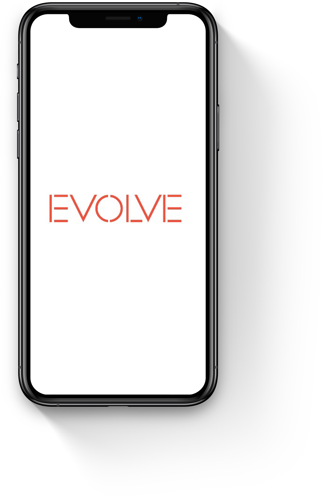
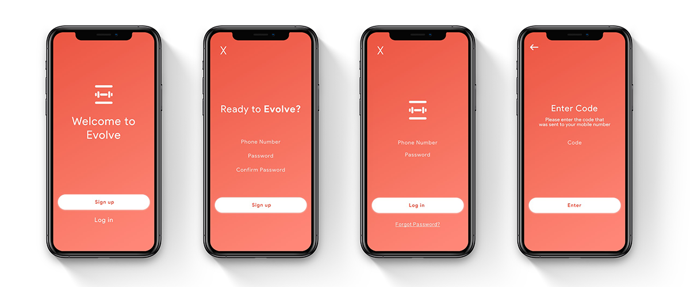
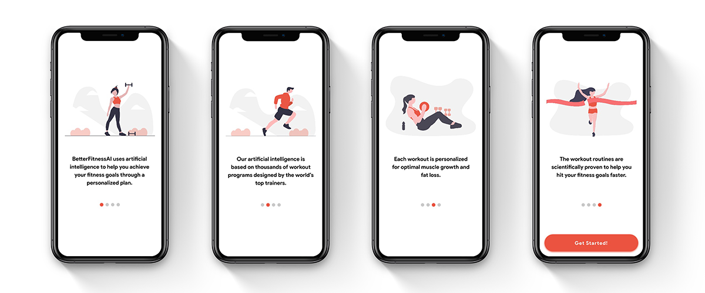
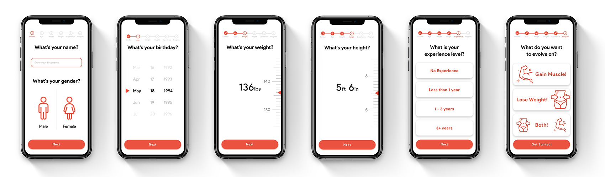
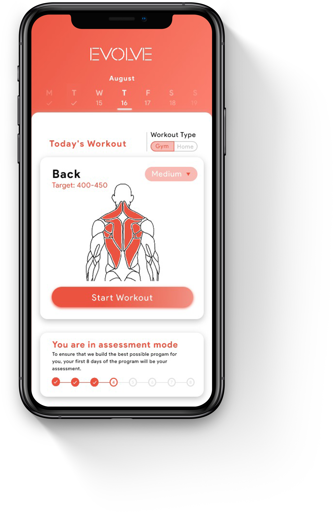
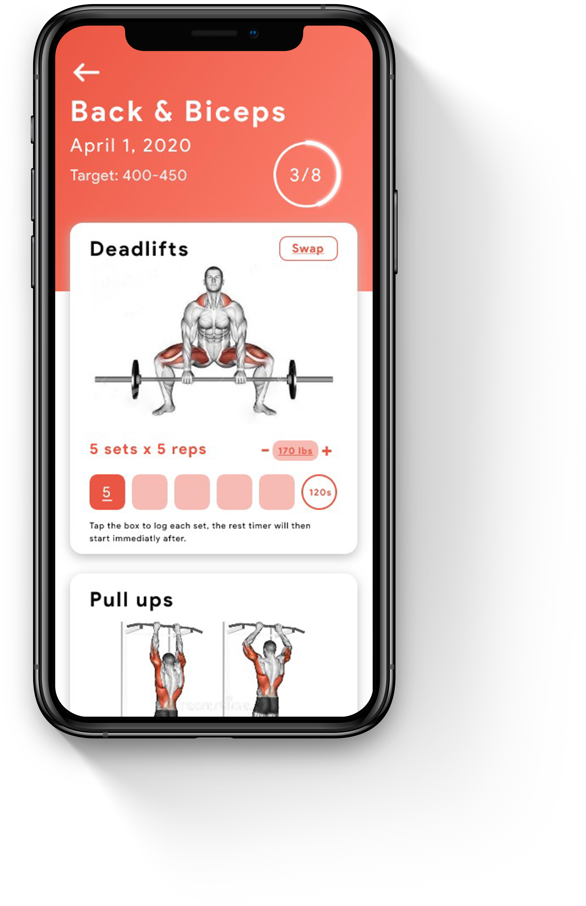
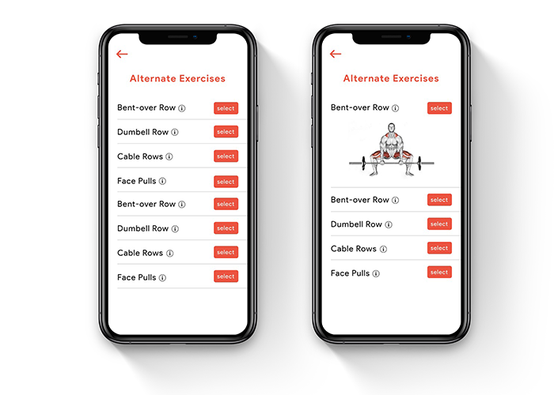
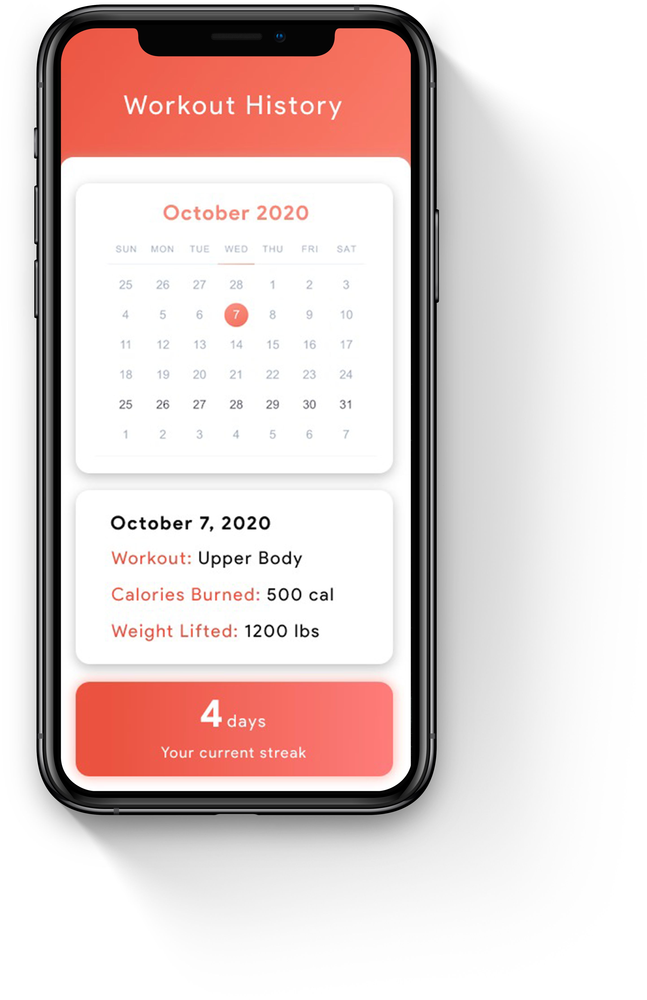
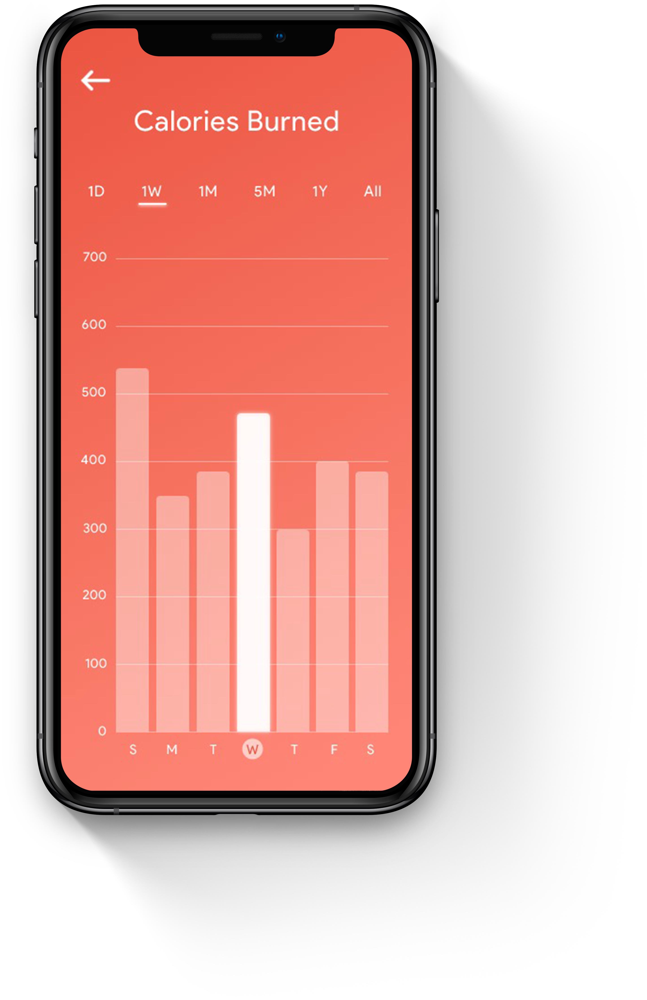

High-Fidelity Mockups
After creating the sketches and testing its usability, I jumped into prototyping my final design solution.
Splash Screen
Splash screens are very important for mobile UX design. It is a short introductory screen that sets the tone for the rest of the user experience and ensures each users’ early experience is a positive one.

User Sign-Up Flow
The first step a new user has to undergo is signing up. When signing up, users will enter their phone number and password. After that is complete, they will get a SMS verification code sent to them. A confirmation code was added so we can decrease the number of spammers and to also protect our users personal information. After entering in the verification code, they will have successfuly signed up and will be led into onboarding.

Onboarding
These screens are added to introduce Evolve to our users. With several onboarding screens, our users can easily enter the app and begin their workouts with confidence and excitement.

Questionaire Screens
In order to ensure that Evolve provides the best exercise plan for our users, we must learn some information about them before we start. This information includes: name, age, weight, height, their fitness experience, and fitness goals. We use this information to calculate the best exercise combinations, number of reps, and weight heaviness.

Home Screen
On the homepage, we have made all the features of the app accessible, such as that day's workout, bodyweight tracking, calorie counter, workout history, and settings. Evolve prepares new personalized workout routines each day for our users. Our algorithm uses our users past workout performance, recovery-period, and fitness goals to generate new workout routines with suggested progression and difficulty optimized to help our users achieve their fitness goals. As they continue to improve, we will adapt and increase the difficulty in their next workout.

Workout Screen
This screen consists of the workout that was generated for the user to complete for the day. These workout routines are designed using proven training methods adopted by celebrity and professional athlete trainers. These include proven methods such as progressive overload, DUP, and high volume training. Evolve acts as a personal training coach by incorporating these methods and strategies alongside your personal performance and progression to determine your readiness to maximize total volume/intensity and employ progressive overload.

Bodyweight Tracker
Based on the answers from the user interviews, the three main reasons for beginning a workout are: losing weight, combatting health conditions, and gaining muscle. Therefore, a feature that we made sure to add to Evolve was being able to let users track their weightloss progression. Below we have graph so users can visualize their weightloss and the ability to view how their weight has been fluctuating since they started the program.

Alternate Exercises
When having users test out Evolve, one pain point came up quite a few times. This pain point is wanting the ability to swap an exercise for a different one. There is a couple reasons for this, such as the exercise is to hard for them, they are not able to do it due to injury, or they simply don't like that exercise. Based on this feedback, I designed a feature that allows users to choose a related exercise to replace the one that they didn't want to do.

Workout History
Evolve allows our users to check their entire workout history since beginning the program. They can click on any day to view completed workouts and calories burned. A workout streak display was also added to keep our users motivated and excited to do their workout. Streaks give users a sense of competition, confidence and giving them more reasons to workout the next day.

Calorie Tracker
The calorie tracker allows users to view on average how much calories they burn during their workouts. They have the option to view just one workout session up to all of the workout sessions that they have completed on Evolve. Evolve uses our users information (weight, height, age, and gender) along with their workout and amount they are lifting to determine the expected amount of calories they will burn.
